BESTIÁRIO
Ao ultrapassar a Membrana, as entidades precisam se submeter às leis que definem a Realidade, sendo moldadas aos conceitos e ideias que enfraqueceram a Membrana em primeiro lugar. Porém, nesse processo, as entidades também lutam de volta, distorcendo as regras às quais estão sendo impostas. Por causa disso, as manifestações podem tomar várias formas: se invocadas propositalmente através de um ritual, as entidades alteram apenas pontos específicos da Realidade comunicados por um conjurador através de um símbolo.
Ambientes com Membrana enfraquecida têm uma origem de Medo que mantém o paranormal ativo. ma origem é como uma memória do Outro Lado, um registro do Medo que foi gerado e que continua servindo como uma ponte para que as entidades tomem forma e consigam se manifestar. Quando surgem espontaneamente, entidades absorvem uma concepção fictícia que seja uma fonte exorbitante de Medo, algo que é temido ao mesmo tempo que não existe, moldando-se como criaturas paranormais. Criaturas não precisam ser famosas; até uma única pessoa sentindo Medo suficiente pode gerar uma. Investigar a origem é crucial, pois criaturas são influenciadas por ideias preexistentes, permitindo encontrar a melhor maneira de derrotá-las.
Ir para lista de CriaturasÉ IMPOSSIVEL COMANDAR AS CRIAS DO OUTRO LADO
FICHAS DE CRIATURAS
Todas as criaturas paranormais ganham uma aparência e se comportam de acordo com a fonte de Medo que as originou, adquirindo habilidades e capacidades únicas. As fichas de criaturas contêm informações, como a origem que as concebeu, sua aparência, habilidades e capacidades físicas e paranormais.
NOME E VD
O nome da ameaça. Ao lado do nome estará o valor de desafio(VD) dela. O VD é utilizado para equilibrar combates, some o valor de todas as criaturas e compare com a soma do NEX de todos os personagens do grupo. Se for equivalente, o combate será equilibrado. Se for próximo da metade do NEX do grupo, o combate será fácil. Se o VD for próximo de uma vez e meia o NEX do grupo, o combate será difícil.
DEFESA
A Defesa e os valores de Fortitude, Reflexos e Vontade da ameaça.
SENTIDOS
Os bônus de Percepção e Iniciativa da criatura, e quaisquer habilidades relacionadas a sentidos.
DESLOCAMENTO
A quantidade de metros que a criatura consegue percorrer com uma ação de movimento (e, entre parênteses, a quantidade de ❑ quadrados de 1,5m).
ATRIBUTOS
Os valores de Agilidade, Força, Intelecto, Presença e Vigor da criaturas.
PERÍCIAS
Os valores das demais perícias da criatura (além de Iniciativa, Percepção, Fortitude, Reflexos e Vontade, que já apareceram). Caso a ameaça não possua outras perícias, este campo não aparecerá.
PONTOS DE VIDA
Os pontos de vida da criatura, além de quaisquer resistências a dano e habilidades defensivas.
HABILIDADES
Quaisquer habilidades passivas — ou seja, que estão sempre ativas — que a ameaça possui.
AÇÕES
Todos as ações e habilidades ativas que a ameaça pode usar. Antes do nome, haverá a ação necessária para usar o ataque ou habilidade. Nos ataques, um multiplicador após o descritor do tipo de ataque (por exemplo, Corpo a corpo x2) indica que a ameaça faz aquele quantidade de ataques por ação (seja por possuir várias armas do mesmo tipo, seja por fazer vários ataques com uma única arma). Exceto se indicado o contrário, ataques de ameaças têm crítico 20/x2.
BLOQUEIOS, ESQUIVAS E CONTRA-ATAQUES
Ao contrário de personagens jogadores, ameaças não possuem a opção de executar bloqueios, esquivas e contra-ataques. Em vez disso, suas estatísticas defensivas são calculadas para representar a totalidade de suas habilidades de proteção. Isso é uma simplificação para tornar o jogo mais ágil e permitir que o mestre possa controlar as ameaças de forma fácil.
AFINAR A MEMBRANA
CLIQUE NO SIMBOLO PARA VER LISTA DE CRIATURAS
PERCEPÇÃO PARANORMAL
As criaturas paranormais possuem diferentes tipos de percepção, mas em termos de regras usaremos termos comuns, como faro, percepção às cegas e visão no escuro. A seguir, colocamos como cada elemento manifesta essas percepções, de modo que você possa incorporar essas características nas descrições das criaturas e de suas ações.
SANGUE
Criaturas de Sangue não possuem visão, mas são extremamente sensíveis à dor e possuem uma apurada percepção tátil. Elas literalmente enxergam através da dor. Isso faz com que sintam pequenas variações em correntes de ar, se orientando através de mudanças sutis.
CONHECIMENTO
Aqueles moldados pelo Conhecimento não percebem a Realidade da mesma forma que nós. Essas criaturas conseguem ver através das correntes que constituem a Realidade, usando o Conhecimento como ferramenta para interpretar essas conexões. Isso faz com que consigam ver coisas invisíveis ao olho nu.
MORTE
O Lodo atravessa as coisas e o tempo, fazendo com que esteja presente em tudo ao mesmo tempo. Criaturas de Morte conseguem perceber através do Lodo, o que faz com que percebam as coisas através da passagem do tempo. Coisas imunes à passagem do tempo fogem da percepção das criaturas de Morte.
ENERGIA
Criaturas de Energia são as únicas que precisam de luz para perceber seus arredores. A maioria dessas criaturas possui brilho próprio, o que faz com que consigam perceber seus arredores mesmo no escuro. Ainda assim, caso sua luz própria seja apagada eles estarão com um grande problema, pois não vão conseguir perceber nada à sua volta.